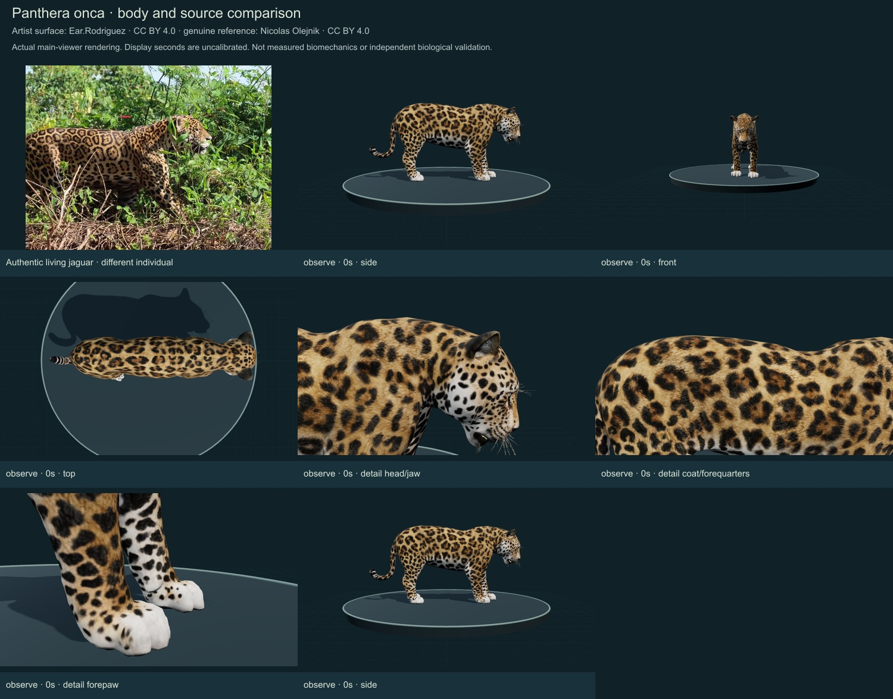
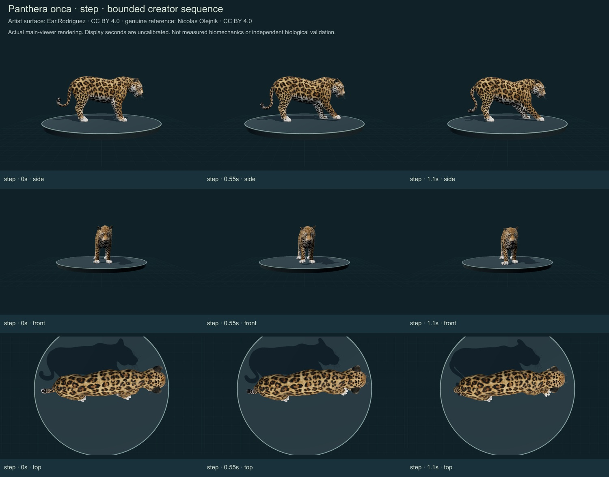
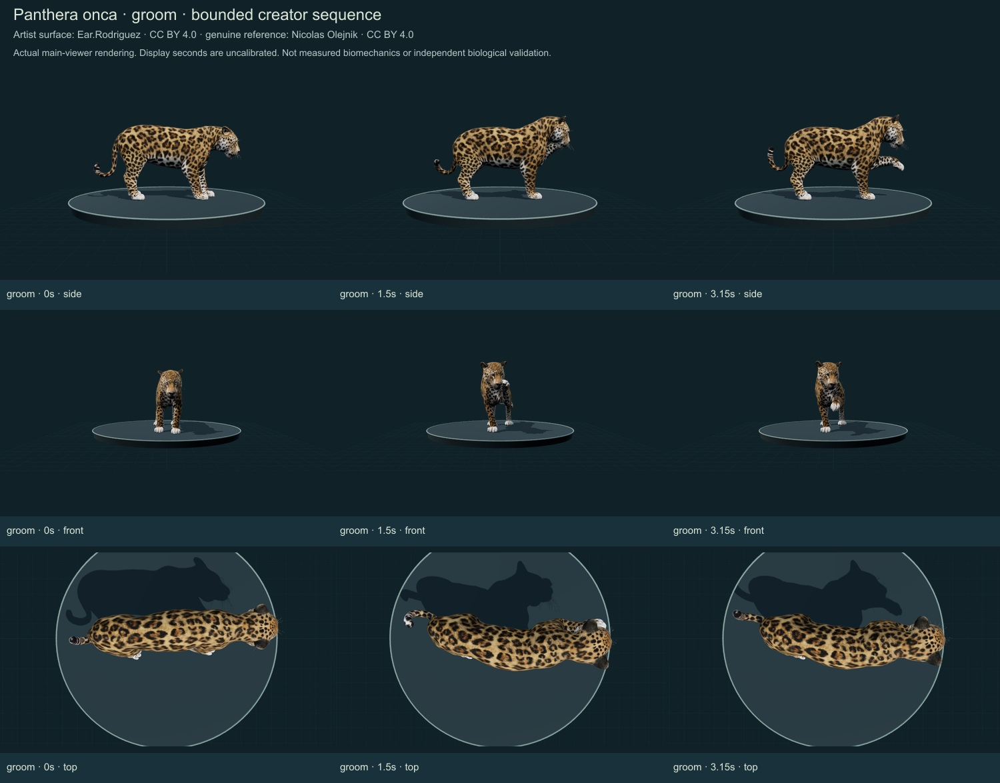
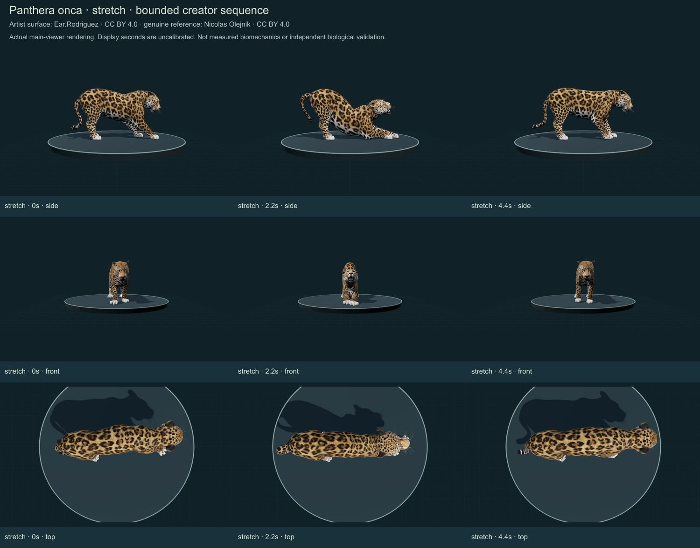

RELEASE 0.6.29 · OCTOBER 25, 2026
Jaguar
Panthera onca · Open same-model viewer
Initial individual author comparison of a credited artist interpretation. It remains unmeasured and partly stylized; software checks and author review are not independent biological validation.
34 actual final main-viewer states were individually inspected on these four credited sheets. Complete walking, prey handling and repose remain unavailable. Three earlier large-animal additions and their separate reports remain here.
Identity and evidence
The species-level name agrees with ASM MDD v2.5 and an exact accepted GBIF linkage. Jaguar is supported by the specialist and USFWS species accounts; no Smithsonian collection determination was obtained. The authentic reference and artist body depict different individuals. A field drawing and habitat image from a research-grade observation were rejected as organism photographs.
Body
The aligned side/front/top views retain a broad-headed, muscular, shorter-tailed felid, rather than a recolored cheetah or leopard. Exact head/body ratios, shoulder volume, toe spacing and sexual/population differences remain unmeasured. Broad white paw tips and the muzzle look simplified relative to the selected living animal.
Surface
Original continuous UV atlas, material images, whisker geometry and skin weights retained. Rosettes with smaller internal spots are visible, with pale ventral regions. The atlas is an artist interpretation with repetitive-looking marking scale and flat short-fur relief; it is not a photograph-matched individual coat or measured optical surface.
Movement and support
Source clips were inspected at multiple phases. The original all-actions sequence contains standing, forepaw placement, stretching and self-cleaning, not a reviewed full walking cycle. Three bounded excerpts now stop before unrelated actions. Forepaw placement is explicitly not locomotion. Stretch entry/forelimb support/recovery and grooming paw-to-face movement were compared from three axes. Residual paw slip, precise fur contact, joint limits and forces remain unvalidated.
The selected Brunner et al. (2026) study observed three zoo-housed jaguars over eight weeks. The actual ethogram on printed p. 5 distinguishes standing, walking, self-cleaning, rest and feeding. It is used to define labels, not to fit joint trajectories or infer activity budgets for wild animals.
Changes
- Retained Ear.Rodriguez’s separately credited jaguar body, skeleton, skinning, images and UVs.
- Corrected approximately 30-degree creator-scene yaw using the head/pelvis axis; normalized display fit only. Side/front/top now align with the body instead of preserving an oblique source scene.
- Separated and bounded original forepaw placement, stretch and grooming segments. Withdrew the draft walking claim after the actual screenshots showed a transition into stretching.
- Added approximate posed-surface head, coat and forepaw landmarks with wider complete-region framing.
- Rejected a field-drawing image and a habitat-only image as organism photographs; retained a visibly compatible living jaguar by Nicolas Olejnik with exact derivative/delivery checksums.
- Preserved all305 previous species objects and all existing wolf/tiger surfaces.




Remaining limitations
- A complete measured or independently reviewed walking/running gait is absent.
- Supported resting/lying/sitting and physiological sleep remain incomplete; standing is not relabelled as rest.
- Prey acquisition, carrying, manipulation, ingestion and jaw/prey contact require separate mechanisms. Grooming is not feeding.
- Model proportions, claw sheaths, pads, fur, tissue strain and optics need expert measurements and further surface work.
- No 90 percent accuracy score, independent specialist review, fitted biomechanics or research prediction is established.
Sources and access scope
- IUCN/SSC Cat Specialist Group: Jaguar — Selected description and natural-history sections read: robust head/trunk, shorter limbs/tail and distinct rosettes. Not a specimen determination or measured fit.
- US Fish and Wildlife Service: Jaguar — Selected physical and behavioral account read. An agency species account, not a Smithsonian collection determination.
- Brunner et al. (2026): Feasts and fasts: feeding regimes and zoo-housed jaguar activity budgets — Full source PDF retrieved; methods context and actual Table 1 on printed p5 viewed. Three captive jaguars over eight weeks; behavioral labels are not measured kinematics or a wild activity schedule. No feeding/physiological result is reproduced by the model.
- ASM Mammal Diversity Database v2.5 — Official current species table checked for exact Panthera onca binomial. Population/subspecies concepts are not counted as separate archive species.
- GBIF accepted species linkage — Exact accepted species-rank linkage; recorded occurrences are not native-range polygons.
- Nicolas Olejnik: authentic jaguar observation photographs — iNaturalist community research-grade Panthera onca association, visually compatible diagnostic shape and rosettes. Not an independent determination, Smithsonian collection confirmation or measured model fit.
- jaguar by Ear.Rodriguez — CC BY 4.0 artist surface retrieved without sign-in through Objaverse. Artist identity labels were checked against the actual shape/coat; not a museum determination.
Artist: Ear.Rodriguez (https://sketchfab.com/Ear.Rodriguez) · CC BY 4.0. Photograph: Nicolas Olejnik · CC BY 4.0. The actual 1024px source derivative and delivered JPEG are checksummed; original-resolution bytes were not retrieved. Original and delivered GLB hashes are in the machine-readable report. No generated organism photographs are used.